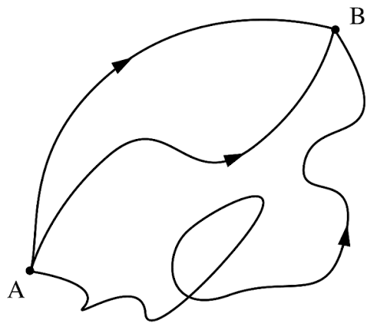
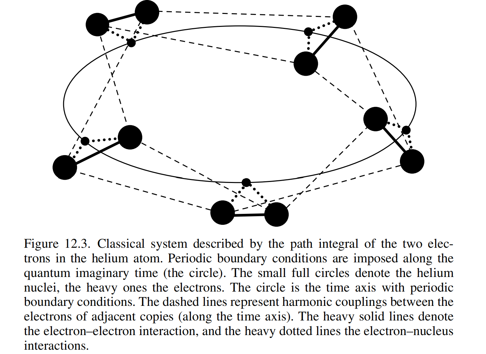

参考教材
[1] Jos Thijssen , Computational Physics
[2] J.J.Sakurai , Jim Napolitano , Modern Quantum Mechanics
路径积分蒙特卡洛这个名字其实很容易给初学者误导，总让人以为是借助蒙特卡洛方法来解决波函数的路径积分问题。但实际上PIMC的出发点与其关系不大，只是借用了路径积分的方法。
1. 路径积分
不过总还是得先介绍一下什么是路径积分。
路径积分方法是在解决一个这样的问题，假设时刻 ti 的初始波函数为 ψ(xi,ti)，我们希望直接计算出任意未来时刻 tf 的波函数 ψ(xf,tf)，我们可以定义一个传播子K(xf,tf;xi,ti)满足
ψ(xf,tf)=∫−∞∞K(xf,tf;xi,ti)ψ(xi,ti)dxi 于是等价的，其形式可以写为
K(xf,tf;xi,ti)=⟨xf∣e−ℏiH^(tf−ti)∣xi⟩ 那么现在问题就是如何
将其写成一个完整的数学形式，我们知道哈密顿量为
H^=T^+V^=2mp^2+V(x^) 注意到动能和势能算符不可对易
[T^,V^]=0 对于非对易算符，eA^+B^=eA^eB^。因此这里不能直接将其拆分，而是需要将总时间间隔 T=tf−ti 均匀分割成 N 个微小的时间步 Δt
Δt=Ntf−ti 令 tk=ti+kΔt（其中 k=0,1,…,N），则 t0=ti，tN=tf。于是利用指数算符的性质，时间演化算符可以拆解为 N 个微小时间步演化算符的连乘
e−ℏiH^(tf−ti)=(e−ℏiH^Δt)N=N 个e−ℏiH^Δt⋅e−ℏiH^Δt⋯e−ℏiH^Δt 于是一个整体的变换被我们切割为了连续变换
K(xf,tf;xi,ti)=∫⋯∫dx1dx2…dxN−1k=1∏N⟨xk∣e−ℏiH^Δt∣xk−1⟩ 这件事就可以等价地理解为对所有可能的（折线）路径求和，也就是费曼的路径积分思想。
下面计算某一特定的微小时间步
Uk,k−1=⟨xk∣e−ℏi(2mp^2+V(x^))Δt∣xk−1⟩ 使用Trotter 乘积公式并略去小量
e−ℏi(T^+V^)Δt=e−ℏiT^Δte−ℏiV^Δt Uk,k−1≈⟨xk∣e−ℏi2mp^2Δte−ℏiV(x^)Δt∣xk−1⟩ 在其中插入动量本征态的完备性关系 ∫dpk∣pk⟩⟨pk∣=I^，并利用平面波内积 ⟨x∣p⟩=2πℏ1eℏipx
⟨xk∣e−ℏi2mp^2Δt∣xk−1⟩=∫dpk⟨xk∣pk⟩⟨pk∣e−ℏi2mp^2Δt∣xk−1⟩=∫dpk(2πℏ1eℏipkxk)e−ℏi2mpk2Δt(2πℏ1e−ℏipkxk−1)=2πℏ1∫dpkexp[ℏi(pk(xk−xk−1)−2mpk2Δt)] 求解动量积分后得到
⟨xk∣e−ℏi2mp^2Δt∣xk−1⟩=2πiℏΔtmexp[ℏi2Δtm(xk−xk−1)2] 代回Uk,k−1
Uk,k−1=2πiℏΔtmexp{ℏi[2m(Δtxk−xk−1)2−V(xk−1)]Δt}
会注意到指数的部分可以写成拉格朗日量的形式
将所有 N 个时间步的积分连乘重新拼合回总传播子 K(xf,tf;xi,ti) 中
K(xf,tf;xi,ti)=N→∞lim(2πiℏΔtm)N/2∫dx1…dxN−1exp[ℏik=1∑NL(xk,Δtxk−xk−1)Δt] 求和在极限下变成积分，也即作用量
Δt→0limk=1∑NL(xk,x˙k)Δt=∫titfL(x(t),x˙(t))dt=S[x(t)] 把归一化常数与无限维的中间点积分统一写成路径测度 D[x(t)]
D[x(t)]≡N→∞lim(2πiℏΔtm)N/2k=1∏N−1dxk 最终得到费曼路径积分的核心表达式
K(xf,tf;xi,ti)=∫x(ti)=xix(tf)=xfD[x(t)]exp(ℏiS[x(t)]) 
这个公式更多的或许是提供一个新的理解波函数传播的insight，毕竟对所有路径求和是一件很困难的事情。
2. PIMC
那么接下来你是不是觉得PIMC就是用蒙特卡洛来数值求解传播子呢？哼哼，很遗憾，并非如此。正如一开始说的，PIMC解决的问题与前面提到的波函数传播问题其实关系不大。
其真正的出发点是量子统计问题。我们知道，系统在某个温度 T 下的配分函数 Z 以及任意物理量 A^ 的热力学平均值 ⟨A⟩可以写作
Z=Tr(e−βH^) ⟨A⟩=Z1Tr(e−βH^A^) 计算的难点其实就是e−βH^这一项，但聪明的你一下子发现这和刚才解决的问题如出一辙。等价地，将β等价于虚时间 τ=ℏβ，均匀分割为 M 个片
τ=Δτ⋅M⟹Δτ=Mβ 我们直接故技重施，把配分函数 Z 可以写成 M 个因子连乘的迹
Z=Tr[(e−Δτ(T^+V^))M] 求迹定义为
Tr(e−βH^)=n∑⟨n∣e−βH^∣n⟩
这里不需要是本征态，任意正交基底即可
于是这就类似于初末状态相同的传播子（相当于使用位置本征态），也即
Z=∫dx1∫dx2⋯∫dxM⟨x1∣e−ΔτH^∣xM⟩⟨xM∣e−ΔτH^∣xM−1⟩…⟨x2∣e−ΔτH^∣x1⟩ 且满足周期性边界条件：x0≡xM
相似的计算过程就不写了，总之可以得到单步虚时间传播子
K(xk+1,xk;Δτ)≈(2πℏ2Δτm)1/2exp[−2ℏ2Δτm(xk+1−xk)2−ΔτV(xk)] 将 M 个单步传播子拼合回配分函数 Z 中
Z=(2πℏ2Δτm)M/2∫dx1dx2…dxMexp(−k=1∑M[2ℏ2Δτm(xk+1−xk)2+ΔτV(xk)]) 不妨写作
Z=C∫dx1…dxMe−βUeff(x1,…,xM) 其中，有效势能函数定义为
Ueff(x1,…,xM)=k=1∑M[21kspring(xk+1−xk)2+M1V(xk)] kspring=ℏ2β2mM 数学上可以视作是一个由 M 个小球通过谐振子弹簧相连构成的环状聚合物

观察配分函数的形式，会发现概率恒正，我们可以试着进行蒙特卡洛采样。（相反，传播子问题由于指数上是个虚数，用蒙特卡洛就不太现实）
不妨直接以最简单的位置算符为示例，根据连续位置表象下求迹的直接公式
Tr(x^e−βH^)=∫−∞∞dx1⟨x1∣x^e−βH^∣x1⟩=∫−∞∞dx1x1⋅⟨x1∣e−βH^∣x1⟩ 同样的用Trotter公式进行切分
Tr(x^e−βH^)=C∫dx1dx2…dxM(x1⋅e−βUeff(X)) 于是现在所求的物理量可以写作
⟨x⟩=Tr(e−βH^)Tr(x^e−βH^)=∫dXe−βUeff(X)∫dXx1e−βUeff(X) 采样时只有有限条路径，积分变求和
⟨x⟩=∑e−βUeff(X)∑x1e−βUeff(X) 注意到我们选取的是闭合路径，也就是说起点的选择满足置换对称性，不同的起点理应对应相同的权重，也就是说我们可以把起点的x1换成更有对称性的xest(X)=M1∑k=1Mxk（本质上是把一条路径换成了M条路径，因为具有相同权重所以在路径很多时肯定会收敛成同一个值，但在有限路径下具有统计优越性）
那么接下来做的事就是很典型的蒙特卡洛算法，定义路径构型 X 的概率密度函数为 P(X)=Ze−βUeff(X)。用 Metropolis 算法生成 Nsample 条符合 P(X) 分布的环形路径样本
X(1),X(2),…,X(Nsample) 代入求和取平均，即为我们所求的统计意义上的位置量
⟨x⟩≈Nsample1a=1∑Nsample(M1k=1∑Mxk(a)) 同理可以用来计算与位置直接相关的势能值
⟨V(x)⟩≈Nsample1a=1∑Nsample(M1k=1∑MV(xk)(a)) 对非位置对角化的算子就比较麻烦，例如我们要求能量的统计平均值，可以利用公式
⟨E⟩=−∂β∂lnZ=−Z1∂β∂Z 写出离散化后的 Trotter-Suzuki 配分函数
Z=CM∫dXexp[−S(X,β)] C=2πℏ2Δτm=(2πℏ2βmM)1/2 S(X,β)=k=1∑M[2ℏ2βmM(xk+1−xk)2+MβV(xk)] 带入求导可得
∂β∂Z=(∂β∂CM)∫dXe−S+CM∫dX(−∂β∂S)e−S ∂β∂CM=−2βMCM ∂β∂S=∂β∂k=1∑M[2ℏ2βmM(xk+1−xk)2+MβV(xk)] =−k=1∑M2ℏ2β2mM(xk+1−xk)2+M1k=1∑MV(xk) ⟨E⟩=∫dXP(X)Ethermo(X)[2βM−k=1∑M2ℏ2β2mM(xk+1−xk)2+M1k=1∑MV(xk)] 于是即有能量对应的可用于蒙特卡洛计算的估计算子Ethermo(X)，其余的一些热力学相关量也可用类似方法导出。
3. 多体推广与负符号问题
以上讨论的是单粒子的系综平均问题，但这一思路很容易地可以扩展到多粒子体系。
推广到 N 个粒子的多体系统时，只需要 N×M 的矩阵 R=(r1,…,rN)，其中每个时间切片上包含所有 N 个粒子的位置（为了方便还是接着在一维上讨论）
Ueff(R)=k=1∑M[i=1∑N2ℏ2β2mM(ri,k+1−ri,k)2+M1V(r1,k,…,rN,k)] 对于 N 个粒子在逆温度 β=1/kBT 下的量子多体系统，其正则配分函数本质上依然是对密度算符求迹
Z=Tr(e−βH^) 但是多体系统的交换对称性和反对称性使得其连续位置基底有一些差异，具体一点说，假设我们先不考虑粒子全同性，则完备的位置基底是单粒子空间的直积
∣r⟩≡∣r1⟩(1)⊗∣r2⟩(2)⊗⋯⊗∣rN⟩(N) 满足正交性 ⟨r∣r′⟩=∏i=1Nδ(ri−ri′)=δN(r−r′) 和完备性 ∫dr1…drN∣r⟩⟨r∣=I^dist
真实体系的全同性要求系统的物理状态必须处于置换群 SN 的一维表示，定义置换算符 P^σ 对坐标基底的作用（σ∈SN）
P^σ∣r1,…,rN⟩=∣rσ−1(1),…,rσ−1(N)⟩≡∣Pσr⟩ 由此，我们可以定义全同粒子投影算符 P^±，正负号分别代表交互对称性和反对称性
P^±=N!1σ∈SN∑(±1)sign(σ)P^σ 将投影算符作用于未对称化基底 ∣r⟩，可以构造出全同粒子的连续位置态 ∣r⟩±
∣r⟩±≡N!P^±∣r⟩=N!1σ∈SN∑(±1)sign(σ)∣Pσr⟩
会发现满足置换对称性的位置态都被我们视作了同一个态。
这组基底满足比较特殊的正交完备性，我们可以试着计算两个全同粒子位置态 ∣r⟩± 与 ∣r′⟩± 的内积
±⟨r∣r′⟩±=N!1σ∈SN∑τ∈SN∑(±1)sign(σ)+sign(τ)⟨Pσr∣Pτr′⟩=N!1σ∈SN∑τ∈SN∑(±1)sign(σ−1τ)⟨r∣Pσ−1τr′⟩ 令 μ=σ−1τ，当 σ 固定时，对 τ 的求和等价于对 μ∈SN 的求和
±⟨r∣r′⟩±=μ∈SN∑(±1)sign(μ)δN(r−Pμr′) 这其实暗示我们全同粒子的位置内积不仅包括 r=r′ 的直通项，还包括将 r′ 中的粒子位置进行任意置换后与 r 重合的微观交换项。
至于完备性，我们将全同粒子连续位置基底 ∣r⟩± 对全空间积分
∫dr∣r⟩±±⟨r∣=∫dr(N!P^±∣r⟩)(N!⟨r∣P^±)=N!P^±(∫dr∣r⟩⟨r∣)P^±=N!P^±I^distP^±=N!I^± 两边同时除以 N!，即得到全同粒子连续位置完备性关系
N!1∫dr1…drN∣r⟩±±⟨r∣=I^± 有了这些理论准备后，我们可以开始推导多体系统的配分函数形式了，同样从最基础的求迹公式出发，利用位置基底进行展开
Z=TrH±(e−βH^) Z±=N!1∫dr±⟨r∣e−βH^∣r⟩± 然后就是Trotter切分和路径积分这些比较繁琐的过程，具体推导就略去吧，我们直接看结果
对于玻色子，取 (±1)sign(σ)=+1
ZBoson=N!1σ∈SN∑∫dR1…dRMexp[−Seff(R;σ)] 对费米子，取 (±1)sign(σ)=(−1)sign(σ)
ZFermion=N!1σ∈SN∑(−1)sign(σ)∫dR1…dRMexp[−Seff(R;σ)] 其中
Seff(R;σ)=k=1∑M[i=1∑N2ℏ2β2mM(ri,k+1−ri,k)2+MβV(r1,k,…,rN,k)] 其连续边界与原先的直接取等不同，可以由置换 σ 确定
ri,M+1=rσ(i),1 然后就是蒙特卡洛的采样过程，但这里有一个令人在意的点，对于费米子，原先在单粒子体系中某一路径构型对应的恒正的概率权重W(C)在此处变成了
W(C)Fermion=(−1)sign(σ)e−Seff(R;σ) 这个东西是正负不定的，与置换的奇偶有关。这意味着我们没法将其等价地视作概率分布，毕竟根据路径积分，我们需要计算的物理量是
⟨A⟩Fermion=∫dCWFermion(C)∫dCA(C)⋅WFermion(C) 不过形式上，我们仍然可以将任意构型的权重 WFermion(C) 拆分为符号与绝对值的乘积
WFermion(C)=sign(C)⋅∣WFermion(C)∣ 定义一个由绝对值权重构成的参考辅助配分函数 Zref
Zref=∫dC∣WFermion(C)∣>0 于是得到一个形式上等价的方程
⟨A⟩Fermion=Zref1∫dCsign(C)⋅∣WFermion(C)∣Zref1∫dCA(C)⋅sign(C)⋅∣WFermion(C)∣ 因为 ∣WFermion(C)∣>0，所以 Pref(C)≡Zref∣WFermion(C)∣ 完全满足概率测度的所有条件，我们依然可以使用蒙特卡洛方法进行采样。
换句话说我们强行转移符号，把概率的部分提取出来。但这么做的代价就是会产生严重的正负抵消问题，采样数必须指数增长才能确保结果的精度，也即大名鼎鼎的负符号问题，与DMC遇到的问题如出一辙。
关于PIMC最出名的成果应该是Ceperley关于液态4He的超流相变相关的工作Path integrals in the theory of condensed helium，希望自己有空时能去认真研读一下。
那么，以上。